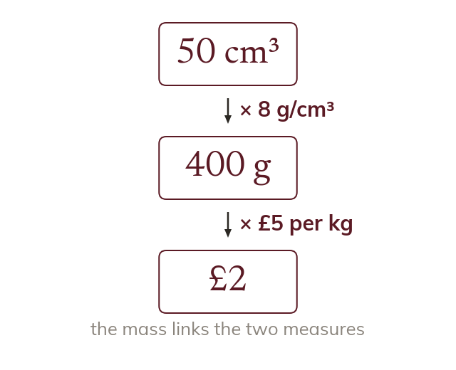
The shared quantity
Two measures combine when the output of one is the input of the other. Volume gives mass through density, and mass then gives a force or a cost.
A lorry's load is known by its volume and its material, but a bridge cares about its weight. Two compound measures chain together, and on a curved graph a rate has to be read at a single moment.
Work down the page at your own pace. Write every answer in your book first, then click to check it.
Read each card, then follow the worked examples one step at a time.

Two measures combine when the output of one is the input of the other. Volume gives mass through density, and mass then gives a force or a cost.
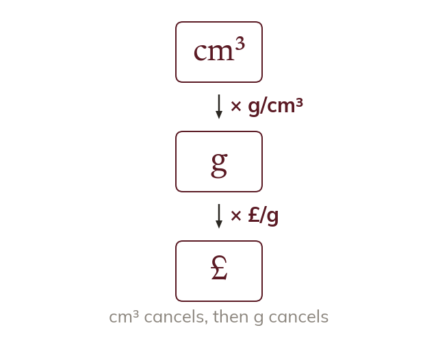
Write the units at each step. The unit that cancels is the shared quantity.
Pick an answer. If it's wrong, the feedback tells you which mistake it was.
Read each card, then follow the worked examples one step at a time.
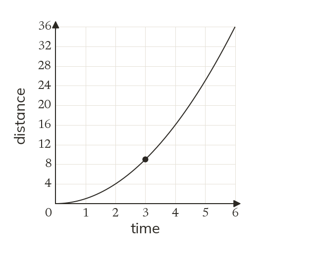
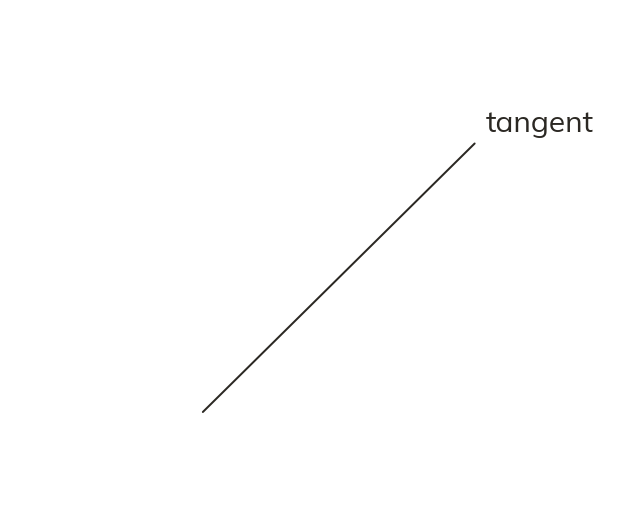
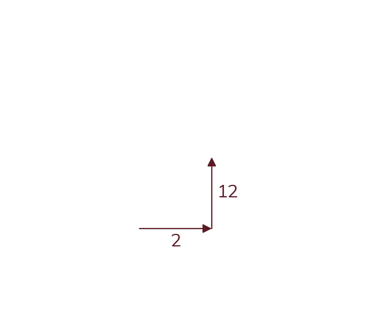
On a curved graph the rate of change is different at every point. It can only be read at one moment.
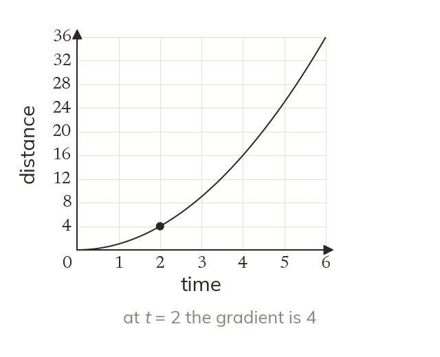
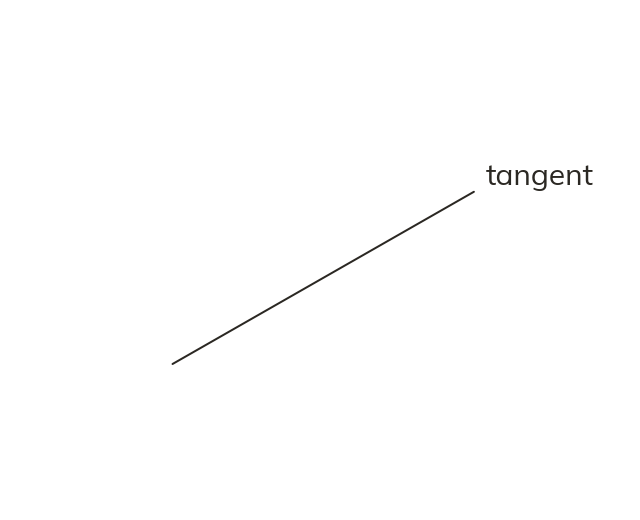
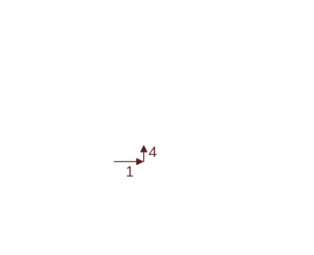
Draw a straight line that touches the curve at that point. Its gradient, read from the axis scales, is the rate at that moment.
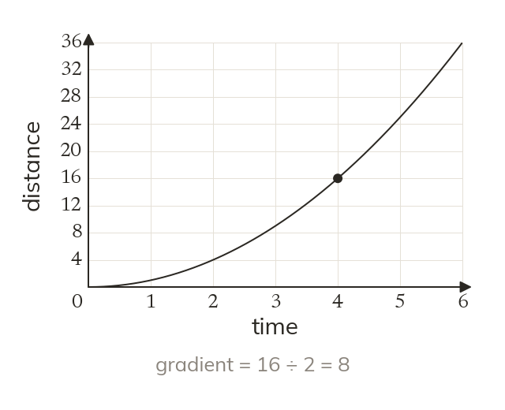
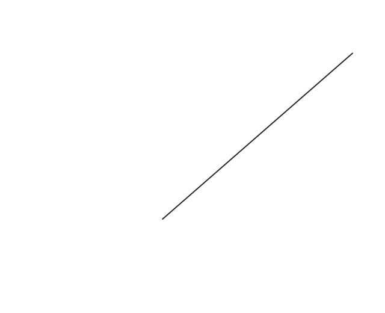
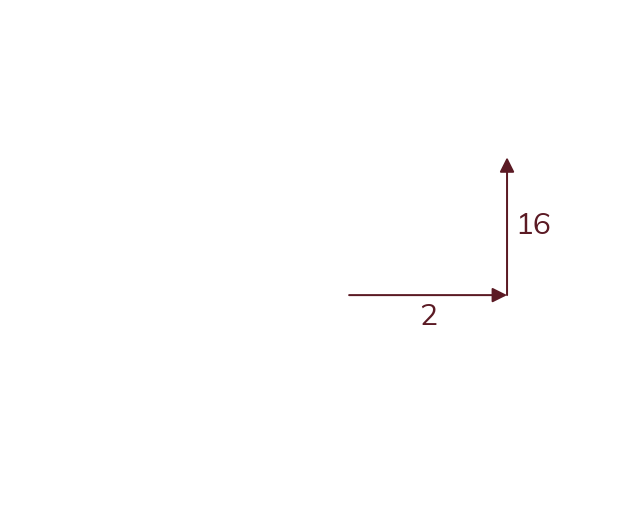
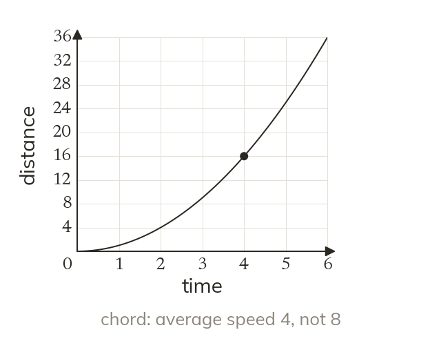
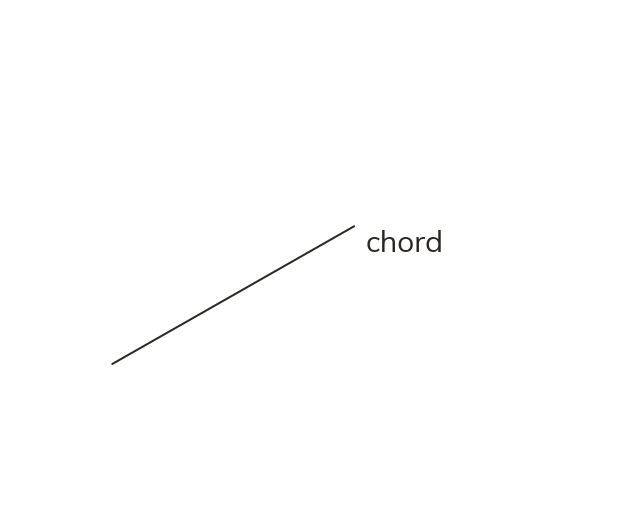
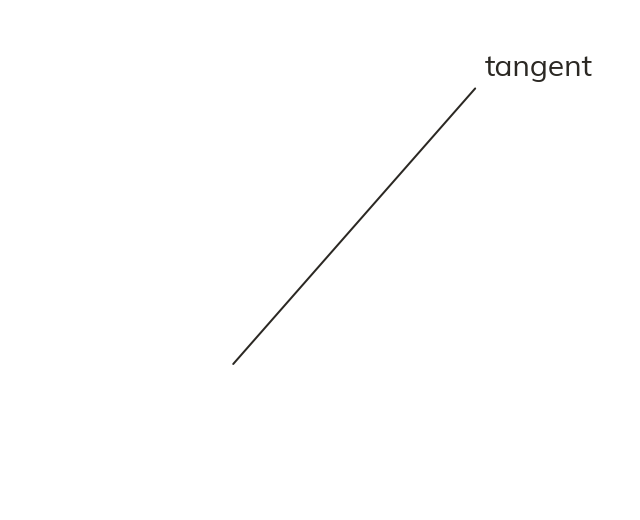
Pick an answer. If it's wrong, the feedback tells you which mistake it was.
Printable worksheet — the questions with room to work.
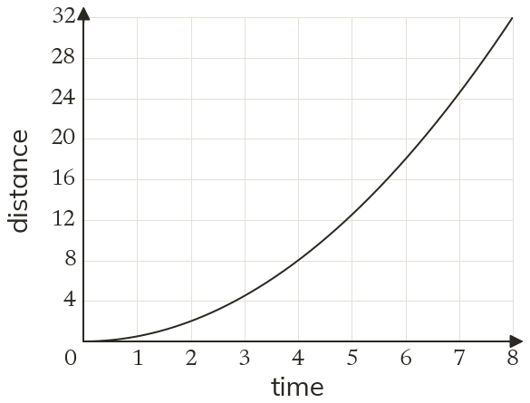
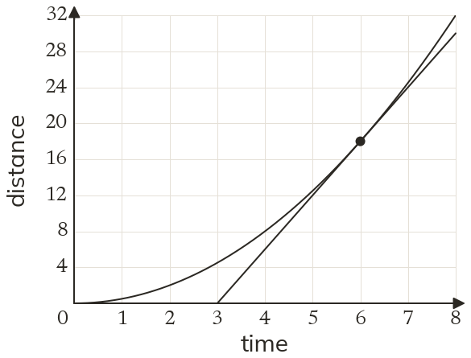
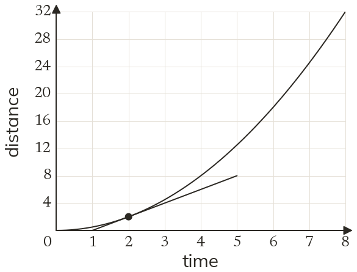
Finished? Next lesson: 9.11.1 Distance-Time Graphs.
Log in, then search for a code to practise that skill.
Videos, worksheets and more on each part of this lesson.